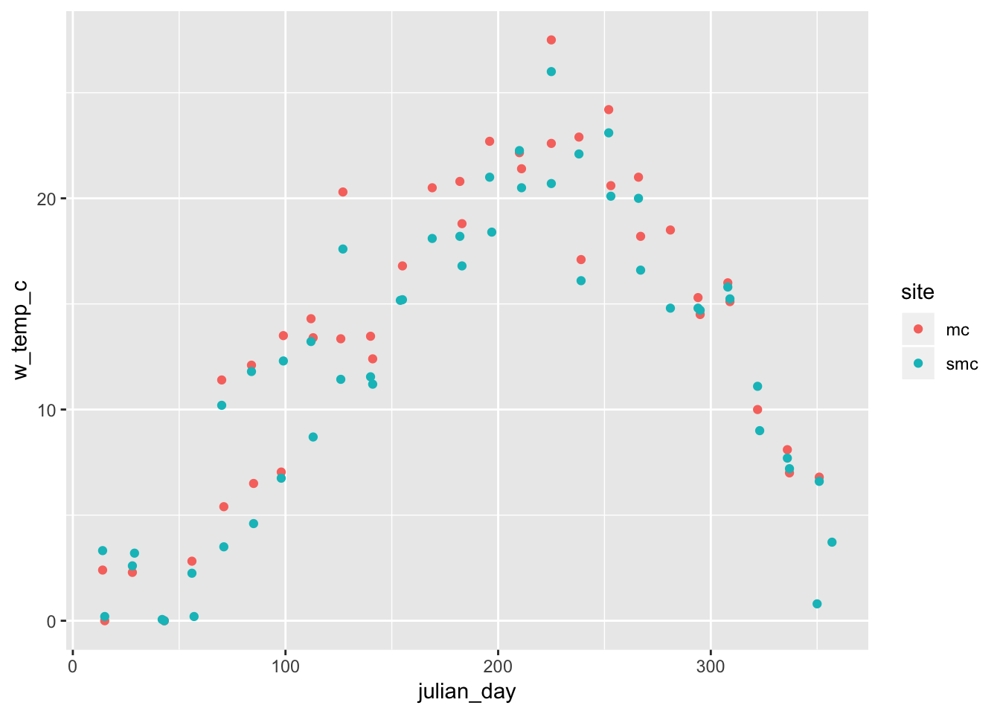
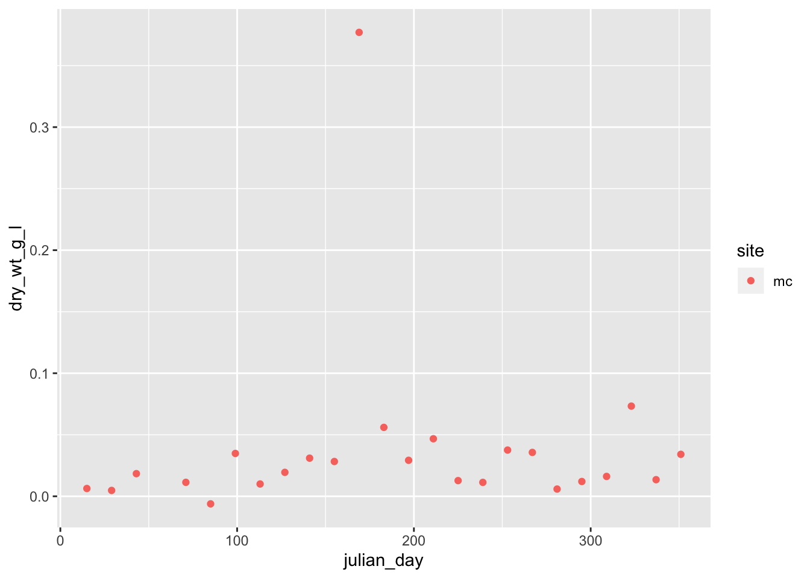
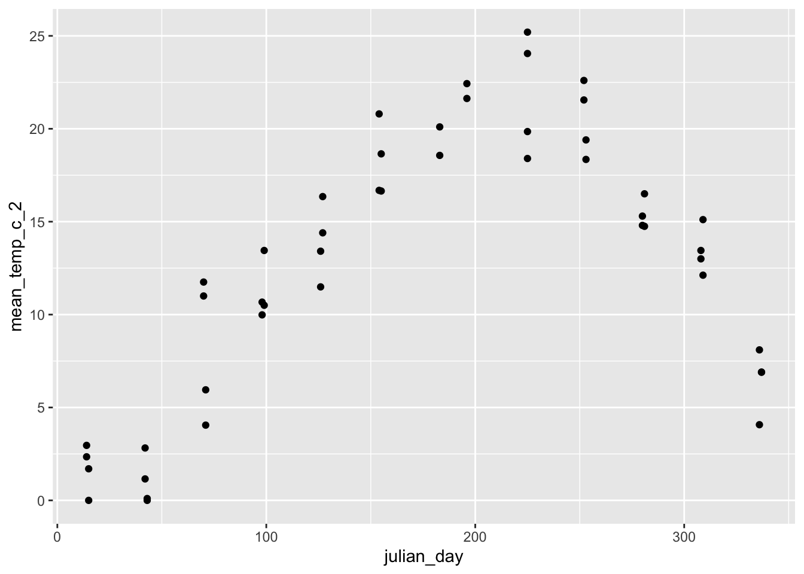

So the pattern of this set of code so far has been how to look at the data visually and how it looks and to see outliers. The next goal is to be able to clean the data or remove, reoranize or reformat the data and add new transformed varaibles.
Here is the script for this file in R without all this stuff Dataframes 04 R Script
##Data Fake Grades
##Load libraries We will read in the main files and load the libraries as we have worked with so far.
# One new package for summary stats
#install.packages("psych")
# load the libraries each time you restart R
library(tidyverse)
library(lubridate)
library(scales)
library(skimr)
library(janitor)
library(patchwork)
library(readxl)
library(kableExtra)
# read in the file:
mc.df <- read_excel("data/mc.xlsx")
# Read in the second file:
smc.df <- read_excel("data/smc.xlsx")
# look at the data
glimpse(mc.df)## Observations: 51
## Variables: 9
## $ datetime <chr> "01/15/2015 09:54", "01/29/2015 09:10", "02/12…
## $ site <chr> "mc", "mc", "mc", "mc", "mc", "mc", "mc", "mc"…
## $ w_temp_c <dbl> 0.00, NA, 0.00, NA, 5.40, 6.50, 13.50, 13.40, …
## $ volume_filtered_l <dbl> 0.600, 0.650, 0.500, NA, 0.520, 0.455, 0.425, …
## $ tare_g <dbl> 0.1043, 0.1071, 0.1017, NA, 0.1054, 0.1016, 0.…
## $ dry_105c_g <dbl> 0.108100, 0.110200, 0.110900, NA, 0.111300, 0.…
## $ turbidity_ntu <dbl> 4.98, 4.11, 14.00, NA, 7.94, 5.83, 7.89, 5.22,…
## $ tp_ugl <dbl> NA, 25.20, 65.70, NA, 97.60, 7.77, 29.90, 24.1…
## $ drp_ugl <dbl> 8.03, 13.00, 51.80, NA, 78.30, 6.53, 8.22, 12.…##Joining dataframes together So lets say we have these two dataframes and we want to work with them together - how do we do this?
###Rbind or append We can bind the two dataframes together as long as they have the same column names and same column numbers. This will append a dataframe to the other. Now when we do code we can work with it all at once. We can also separate the data into smaller dataframes later.
mc_smc.df <- rbind(mc.df, smc.df)
glimpse(mc_smc.df)## Observations: 102
## Variables: 9
## $ datetime <chr> "01/15/2015 09:54", "01/29/2015 09:10", "02/12…
## $ site <chr> "mc", "mc", "mc", "mc", "mc", "mc", "mc", "mc"…
## $ w_temp_c <dbl> 0.00, NA, 0.00, NA, 5.40, 6.50, 13.50, 13.40, …
## $ volume_filtered_l <dbl> 0.600, 0.650, 0.500, NA, 0.520, 0.455, 0.425, …
## $ tare_g <dbl> 0.1043, 0.1071, 0.1017, NA, 0.1054, 0.1016, 0.…
## $ dry_105c_g <dbl> 0.108100, 0.110200, 0.110900, NA, 0.111300, 0.…
## $ turbidity_ntu <dbl> 4.98, 4.11, 14.00, NA, 7.94, 5.83, 7.89, 5.22,…
## $ tp_ugl <dbl> NA, 25.20, 65.70, NA, 97.60, 7.77, 29.90, 24.1…
## $ drp_ugl <dbl> 8.03, 13.00, 51.80, NA, 78.30, 6.53, 8.22, 12.…##The pipe So lets start thinking about how to string a lot of commands together. Before this we have assigned items to a name or environmental varaible with <- bu now what we want to do is sort of the opposite. We want to take an object or output of an object and pass it to the right to do new things with the output. We do this using the pipe command %>%. This takes what is on the left and passes it to the right.
mc_smc.df %>% glimpse()## Observations: 102
## Variables: 9
## $ datetime <chr> "01/15/2015 09:54", "01/29/2015 09:10", "02/12…
## $ site <chr> "mc", "mc", "mc", "mc", "mc", "mc", "mc", "mc"…
## $ w_temp_c <dbl> 0.00, NA, 0.00, NA, 5.40, 6.50, 13.50, 13.40, …
## $ volume_filtered_l <dbl> 0.600, 0.650, 0.500, NA, 0.520, 0.455, 0.425, …
## $ tare_g <dbl> 0.1043, 0.1071, 0.1017, NA, 0.1054, 0.1016, 0.…
## $ dry_105c_g <dbl> 0.108100, 0.110200, 0.110900, NA, 0.111300, 0.…
## $ turbidity_ntu <dbl> 4.98, 4.11, 14.00, NA, 7.94, 5.83, 7.89, 5.22,…
## $ tp_ugl <dbl> NA, 25.20, 65.70, NA, 97.60, 7.77, 29.90, 24.1…
## $ drp_ugl <dbl> 8.03, 13.00, 51.80, NA, 78.30, 6.53, 8.22, 12.…##Mutate So lets say in this dataframe we wanted to calculate the Dry Weight of a sample by subracting the Tare weight from Dry Weight
mc_smc.df <- mc_smc.df %>% mutate(variable = varaible - variable))
# mc_smc.df <- mc_smc.df %>% mutate(variable = varaible - variable))
mc_smc.df <- mc_smc.df %>%
mutate(dry_wt_g = dry_105c_g - tare_g)So here we made a new column and its all set. Lets say we wanted to calculate the Dry Wt per liter
# mc_smc.df <- mc_smc.df %>% mutate(variable = varaible / variable))
mc_smc.df <- mc_smc.df %>%
mutate(dry_wt_g_l = dry_wt_g/volume_filtered_l)So that has done a transformation on two separate variables and would take a while to do one by one. We can also link the mutations together with commas and it will do the same thing above and overwrite the variables again
# mc_smc.df <- mc_smc.df %>%
# mutate(
# variable = varaible - variable),
# variable = varaible / variable)
# )
mc_smc.df <- mc_smc.df %>%
mutate(
dry_wt_g = dry_105c_g - tare_g,
dry_wt_g_l = dry_wt_g/volume_filtered_l
)So if you look at the data you will see that datetieme is a character variable and not a date time. We can use the same method above to convert that.
We will use the lubridate package to do this…
y = year
m = month
d = day
h = hour
m = minute
s = second
You put these in order that they appear in the excel cell and note that if you open a csv and save it again from excel it will convert it to Month - Day - Year Hour: Minute: Second so be aware if there is an error here.
# you can make dates and time using lubridate
# This would be the traditional way and maybe a bit slower.
# mc.df$datetime <- mdy_hm(mc.df$datetime)
# df <- df %>%
# mutate(
# variable = mdy_hm(varaible)
# )
# There is a way we can change many variaibles at a time
mc_smc.df <- mc_smc.df %>%
mutate(
datetime = mdy_hm(datetime)
)##Modifying dates So we can now work with this datetime column really easily and pull out parts of it to work with further
mc_smc.df <- mc_smc.df %>%
mutate(
year = year(datetime),
month = month(datetime),
day = day(datetime),
julian_day = yday(datetime)
)What if you wanted to work with only one species for each of the charactes. This will select only those individuals that are setosa. Note that in this you need = =.
mc_smc_2015.df <- mc_smc.df %>% filter(year==2015)
head(mc_smc_2015.df)## # A tibble: 6 x 15
## datetime site w_temp_c volume_filtered… tare_g dry_105c_g
## <dttm> <chr> <dbl> <dbl> <dbl> <dbl>
## 1 2015-01-15 09:54:00 mc 0 0.6 0.104 0.108
## 2 2015-01-29 09:10:00 mc NA 0.65 0.107 0.110
## 3 2015-02-12 10:57:00 mc 0 0.5 0.102 0.111
## 4 2015-02-26 12:12:00 mc NA NA NA NA
## 5 2015-03-12 11:15:00 mc 5.4 0.52 0.105 0.111
## 6 2015-03-26 11:15:00 mc 6.5 0.455 0.102 0.0988
## # … with 9 more variables: turbidity_ntu <dbl>, tp_ugl <dbl>,
## # drp_ugl <dbl>, dry_wt_g <dbl>, dry_wt_g_l <dbl>, year <dbl>,
## # month <dbl>, day <int>, julian_day <dbl>##Boolean search terms of interest
boolean.tbl <- read_csv("data/boolean.csv")
# boolean.tbl %>%
# kable("html") %>%
# kable_styling(bootstrap_options = c("striped", "hover", "condensed"))mc_2015.df <- mc_smc.df %>% filter(year==2015 & site=="mc")
head(mc_smc_2015.df)## # A tibble: 6 x 15
## datetime site w_temp_c volume_filtered… tare_g dry_105c_g
## <dttm> <chr> <dbl> <dbl> <dbl> <dbl>
## 1 2015-01-15 09:54:00 mc 0 0.6 0.104 0.108
## 2 2015-01-29 09:10:00 mc NA 0.65 0.107 0.110
## 3 2015-02-12 10:57:00 mc 0 0.5 0.102 0.111
## 4 2015-02-26 12:12:00 mc NA NA NA NA
## 5 2015-03-12 11:15:00 mc 5.4 0.52 0.105 0.111
## 6 2015-03-26 11:15:00 mc 6.5 0.455 0.102 0.0988
## # … with 9 more variables: turbidity_ntu <dbl>, tp_ugl <dbl>,
## # drp_ugl <dbl>, dry_wt_g <dbl>, dry_wt_g_l <dbl>, year <dbl>,
## # month <dbl>, day <int>, julian_day <dbl>Lets try this with a plot. What happens here is it takes the dataframe and then passes it to the ggplot commands. So the dataframe is removed from the ggplot commands. I will show you why in a second that this is really cool.
mc_smc.df %>%
ggplot(aes(x=julian_day, y=w_temp_c, color=site)) +
geom_point() ## Warning: Removed 12 rows containing missing values (geom_point).
So what we can also do is rather than making new dataframes all the time for graphs we can use the pipe command and lead the data into GGPlot
mc_smc.df %>% filter(year==2015 & site=="mc") %>%
ggplot(aes(x=julian_day, y=dry_wt_g_l, color=site)) +
geom_point() ## Warning: Removed 1 rows containing missing values (geom_point).
##Selecting variables What if you wanted to select only certain variables to work with? Now lets use two ways to do the same thing…..
mc_smc_drywt.df <- mc_smc.df %>%
select(datetime, julian_day, dry_wt_g_l)Lets assume you wanted to select all dry weight and volume filtered you can use things like: starts_with(), ends_with(), contains(), everything() in various combinations such as
mc_smc_drywt.df <- mc_smc.df %>%
select(datetime, julian_day, volume_filtered_l, starts_with("dry"))##What if you wanted see all NA values in a particular variable….
mc_smc.df %>% filter(is.na(dry_wt_g_l))## # A tibble: 5 x 15
## datetime site w_temp_c volume_filtered… tare_g dry_105c_g
## <dttm> <chr> <dbl> <dbl> <dbl> <dbl>
## 1 2015-02-26 12:12:00 mc NA NA NA NA
## 2 2016-02-11 10:00:00 mc NA NA NA NA
## 3 2016-12-22 10:00:00 mc NA NA NA NA
## 4 2016-07-14 08:00:00 smc 21 NA NA NA
## 5 2016-12-22 08:45:00 smc 3.72 NA NA NA
## # … with 9 more variables: turbidity_ntu <dbl>, tp_ugl <dbl>,
## # drp_ugl <dbl>, dry_wt_g <dbl>, dry_wt_g_l <dbl>, year <dbl>,
## # month <dbl>, day <int>, julian_day <dbl>##What if you wanted see all NA values
mc_smc.df %>% filter(!is.na(dry_wt_g_l))## # A tibble: 97 x 15
## datetime site w_temp_c volume_filtered… tare_g dry_105c_g
## <dttm> <chr> <dbl> <dbl> <dbl> <dbl>
## 1 2015-01-15 09:54:00 mc 0 0.6 0.104 0.108
## 2 2015-01-29 09:10:00 mc NA 0.65 0.107 0.110
## 3 2015-02-12 10:57:00 mc 0 0.5 0.102 0.111
## 4 2015-03-12 11:15:00 mc 5.4 0.52 0.105 0.111
## 5 2015-03-26 11:15:00 mc 6.5 0.455 0.102 0.0988
## 6 2015-04-09 10:00:00 mc 13.5 0.425 0.0959 0.111
## 7 2015-04-23 12:50:00 mc 13.4 0.51 0.103 0.108
## 8 2015-05-07 14:40:00 mc 20.3 0.55 0.104 0.114
## 9 2015-05-21 11:40:00 mc 12.4 0.5 0.102 0.118
## 10 2015-06-04 11:25:00 mc 16.8 0.52 0.105 0.120
## # … with 87 more rows, and 9 more variables: turbidity_ntu <dbl>,
## # tp_ugl <dbl>, drp_ugl <dbl>, dry_wt_g <dbl>, dry_wt_g_l <dbl>,
## # year <dbl>, month <dbl>, day <int>, julian_day <dbl>##Groups and summmarize data
Now a really cool thing we can do is to group data and then look at summairies of the data or use it later down the road.
So lets say we wanted to see the mean temperature by month in each stream
mc_smc.df %>% group_by(site, year, month) %>%
mutate(
mean_temp_c = mean(w_temp_c)
)## # A tibble: 102 x 16
## # Groups: site, year, month [48]
## datetime site w_temp_c volume_filtered… tare_g dry_105c_g
## <dttm> <chr> <dbl> <dbl> <dbl> <dbl>
## 1 2015-01-15 09:54:00 mc 0 0.6 0.104 0.108
## 2 2015-01-29 09:10:00 mc NA 0.65 0.107 0.110
## 3 2015-02-12 10:57:00 mc 0 0.5 0.102 0.111
## 4 2015-02-26 12:12:00 mc NA NA NA NA
## 5 2015-03-12 11:15:00 mc 5.4 0.52 0.105 0.111
## 6 2015-03-26 11:15:00 mc 6.5 0.455 0.102 0.0988
## 7 2015-04-09 10:00:00 mc 13.5 0.425 0.0959 0.111
## 8 2015-04-23 12:50:00 mc 13.4 0.51 0.103 0.108
## 9 2015-05-07 14:40:00 mc 20.3 0.55 0.104 0.114
## 10 2015-05-21 11:40:00 mc 12.4 0.5 0.102 0.118
## # … with 92 more rows, and 10 more variables: turbidity_ntu <dbl>,
## # tp_ugl <dbl>, drp_ugl <dbl>, dry_wt_g <dbl>, dry_wt_g_l <dbl>,
## # year <dbl>, month <dbl>, day <int>, julian_day <dbl>,
## # mean_temp_c <dbl>We can also use the summarize function but it leads to something different. What you get is the grouping variable and the varaibles you are summarizing. I have found a neat way to get others and that is using the first(varaible) summarize term to get the first value of a group.
mc_smc.df %>% group_by(site, year, month) %>%
summarize(
mean_temp_c = mean(w_temp_c)
)## # A tibble: 48 x 4
## # Groups: site, year [4]
## site year month mean_temp_c
## <chr> <dbl> <dbl> <dbl>
## 1 mc 2015 1 NA
## 2 mc 2015 2 NA
## 3 mc 2015 3 5.95
## 4 mc 2015 4 13.4
## 5 mc 2015 5 16.4
## 6 mc 2015 6 18.6
## 7 mc 2015 7 NA
## 8 mc 2015 8 19.8
## 9 mc 2015 9 19.4
## 10 mc 2015 10 16.5
## # … with 38 more rowsYou should get used to adding in the term na.rm=TRUE on all of your calculations. If you don’t you can see the results below.
mc_smc.df %>% group_by(site, year, month) %>%
summarize(
mean_temp_c = mean(w_temp_c),
mean_temp_c_2 = mean(w_temp_c, na.rm=TRUE)
)## # A tibble: 48 x 5
## # Groups: site, year [4]
## site year month mean_temp_c mean_temp_c_2
## <chr> <dbl> <dbl> <dbl> <dbl>
## 1 mc 2015 1 NA 0
## 2 mc 2015 2 NA 0
## 3 mc 2015 3 5.95 5.95
## 4 mc 2015 4 13.4 13.4
## 5 mc 2015 5 16.4 16.4
## 6 mc 2015 6 18.6 18.6
## 7 mc 2015 7 NA 20.1
## 8 mc 2015 8 19.8 19.8
## 9 mc 2015 9 19.4 19.4
## 10 mc 2015 10 16.5 16.5
## # … with 38 more rowsFinally we could also use this for plotting
mc_smc.df %>% group_by(site, year, month) %>%
summarize(
julian_day = first(julian_day),
mean_temp_c_2 = mean(w_temp_c, na.rm=TRUE)
) %>%
ggplot( aes(x=julian_day, y=mean_temp_c_2))+
geom_point()
##Clean data
So lets finally use the janitor pacakge to clean up this data. This will make working with data sets from other users a bit easier to work with quickly rather than reformatting all the values manually.
Note that this will get rid of empty columns and rows if from an excel sheet and will clean up the variable names.
iris.df <- read_csv("data/iris.csv") %>%
clean_names() %>%
remove_empty(c("rows", "cols"))## Parsed with column specification:
## cols(
## Sepal.Length = col_double(),
## Sepal.Width = col_double(),
## Petal.Length = col_double(),
## Petal.Width = col_double(),
## Species = col_character()
## )head(iris.df)## # A tibble: 6 x 5
## sepal_length sepal_width petal_length petal_width species
## <dbl> <dbl> <dbl> <dbl> <chr>
## 1 5.1 3.5 1.4 0.2 setosa
## 2 NA 3 1.4 0.2 setosa
## 3 4.7 3.2 1.3 0.2 setosa
## 4 4.6 3.1 1.5 0.2 setosa
## 5 5 3.6 1.4 0.2 setosa
## 6 5.4 3.9 1.7 0.4 setosa